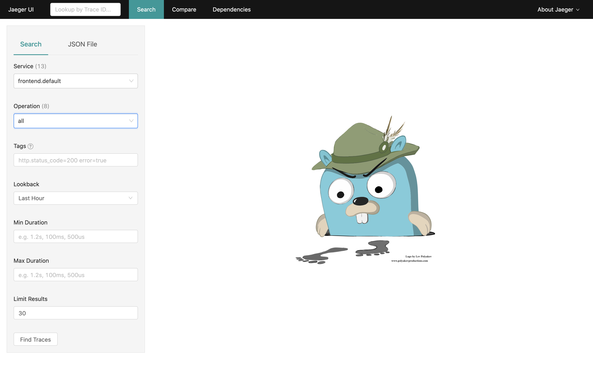

Analyze request traces in Jaeger
This chapter introduces the concept of Distributed Tracing and presents how to analyze request traces using the Jaeger Istio addon.
Outline
In this chapter you will learn:
- What is Distributed Tracing and why it is important.
- How Jaeger collects distributed traces from application services deployed in service mesh.
- How to search traces in Jaeger.
- How to analyze trace spans and span context.
- How to switch between trace representations.
Walkthrough
Distributed tracing is a method used to profile and monitor distributed applications, especially those built using the microservices architecture.
TODO: Describe how Jaeger works
Access the dashboard
Port-forward the Jaeger dashboard to your local machine:
$ istioctl dashboard jaeger
Your browser should startup automatically and display the dashboard. Otherwise, visit the address: http://localhost:16686.
Analyze request traces
Search traces from the last hour for the frontend service. Limit the results to 30 traces:

The results should be similar to:

The plot at the top presents the clustered histogram of request traces over time. Below, Jaeger presents a list of captured request traces.
Trace represents a complete request path through the application (i.e., multiple microservices). It is composed of request spans reported by individual application services. Each span informs how much time a given service spent on processing the request and what was the request result (success or error).
That way we can easily infer which service introduces a bottleneck (e.g., high latency) or which service causes a failure in a large application.
Let's inspect an arbitrary trace of length >1:

The above example ilustrates trace of a request handled by two services: the frontend service
calls the productcatalog service. The entire request took 1.33ms to complete, but 0.57ms of
the request was handled by the productcatalog service.
Now, click on the frontend span to reveal the context information:

Istio proxy running in each application pod enhances request spans with rich context information:
- content type,
- HTTP method,
- HTTP protocol,
- HTTP status code,
- request URL,
- request size,
- user agent.
These data can be useful for debugging the particular microservice identified as anomalous.
Note that without a proxy, the application would have to build the span (retrieve trace ID from request headers, inject context information) and sent it to the span collector on its own. That requires using a tracing library compatibile with application programming language.
Since the proxy participates in all communication between services, it can offload the application from the tracing function. The tracing is transparent for the application and requires no configuration.
Lastly, switch to the graph representation of the trace:


The graph view enables you to inspect complex request traces consisting of many nested spans.
Exercises
Describe three distinct request paths from
checkoutservice to other services. Include:- when the request started (date, time),
- total request duration,
- request protocol, method and status code,
- duration of nested span.